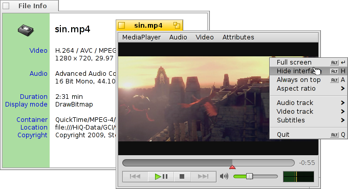
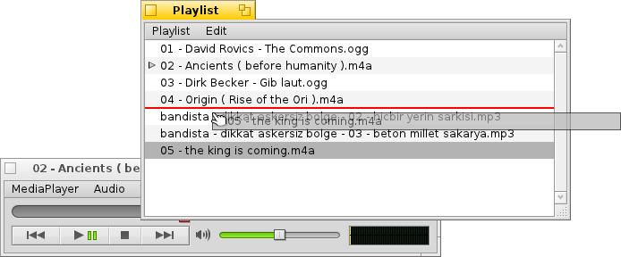

MediaPlayer
MediaPlayer
| Deskbar : | ||
| Localisation : | /boot/system/apps/MediaPlayer | |
| Réglages : | ~/config/settings/MediaPlayer |
MediaPlayer is the default player for all audio and video files. Thanks to its ffmpeg backend, a plethora of widely used formats are supported. Its simple interface has all the controls you'd expect:

Le curseur de la barre de progression vous permet de changer rapidement de position, En passant la souris au-dessus il affichera le temps écoulé et restant à lire. un clic sur l'affichage de l'heure à la droite de cet indicateur, basculera entre un affichage court ou long du temps restant.
En-dessous vous trouverez les contrôles habituels pour revenir à la piste précédente, suspendre/reprendre la lecture, l'arrêter et passer à la piste suivante. Vient ensuite le contrôle du volume (en cliquant sur le symbole du haut-parleur vous pourrez basculer en mode sourdine), et un VU-mètre.
Lecture audio et vidéo
Comme il n'y a pas de fonctionnalités spécifiques à la lecture audio, nous allons passer directement aux fonctionnalités vidéo ou générales.
Les informations du fichier (Alt I) sont disponibles pour tous les médias. Vous accédez ainsi à la durée du fichier, aux détails des pistes Audio/Vidéo et de leurs codecs.
Les commandes du menus les plus utilisées sont également accessibles dans le menu contextuel d'un clic droit dans la zone vidéo, Cequi est très pratique en mode plein écran.
Dans , vous trouverez les options pour agrandir l'image et pour forcer ses proportions. Laisser les proportions par défaut dans les réglages du flux () est ce qui fonctionne le mieux pour les fichiers encodés correctement.
MediaPlayer supporte les sous-titres au format SRT. Pour les faire apparaître dans (Sous-titres), leurs noms de fichiers doivent être identiques à celui du fichier vidéo avec à la place de l'extension, le nom de la langue et le suffixe ".srt". Par exemple :
MyMovie.avi MyMovie.Deutsch.srt MyMovie.English.srt MyMovie.Français.srt
Le sous-menu (Vidéo | Piste) vous permet de choisir entre les différentes pistes audio qui peuvent être contenues dans le fichier vidéo quand celui ci contient plusieurs langues. Le sous-menu (Vidéo | Piste) vous offre la même chose quand plusieurs vues différentes sont disponibles dans le flux vidéo.
Vous pouvez : basculer en mode () avec Alt Entrée, Alt F ou un double-clic; cacher les bordures de fenêtres et les boutons de contrôles du MediaPlayer avec (), Alt H ou un double-clic droit; ou encore garder la fenêtre () ou Alt A.
Listes de lectures
(ALT P) ouvre la fenêtre de la d'attente. Double-cliquez sur une entrée pour commencer la lecture du fichier associé.
Vous pouvez ajouter plus de fichiers en les déposant dans la liste, et modifier leur ordre en les déplaçant à la souris. À partir du menu () vous pouvez () ou ( / Suppr) une entrée de la liste ou encore pour le supprimer réellement ( / ALT T).
Bien sûr, vous pouvez enregistrer () une liste de lecture pour l'ouvrir de nouveau () plus tard, ou la lancer en double-cliquant simplement sur son fichier.
Réglages
Il existe plusieurs paramètres pour affiner le comportement du MediaPlayer.

The first batch, , is pretty self-explaining.
Start playback automatically, close windows when finished or play clips in a loop.
From the pop-up menu you choose MediaPlayer's launch behavior. Should it resume playing where it left off last time: , , or .
Next are different .
You can opt to , which cuts down CPU usage but only works for one video window and needs a supporting video card driver.
You can (when not in overlay mode) which uses very fast filtering to smooth over otherwise blocky pixels when zooming video or watching in full-screen mode.
if you prefer slightly bigger controls, maybe because you watch the screen from a bit farther away when in full-screen mode.
Then there are settings for and . They can be shown at the , which will always have them overlayed over the picture. Or , which allows you to resize the window vertically and have the subtitles appear in the black bar at the bottom instead.
Le dernier réglage détermine le volume des clips dont les fenêtres sont en arrière plan. Vous pouvez les faire toutes hurler à plein volume (), réduire leur volume () pour moins de confusion ou les mettre en sourdine () pour plus de tranquillité.
Commandes au clavier
MediaPlayer offre des combinaisons de touches commodes pour contrôler la lecture sans utiliser la souris.
| Z | Sauter à la piste précédente | |
| X | Lecture | |
| C | Pause | |
| V | Arrêt | |
| B | Sauter à la piste suivante |
Ces touches de commandes sont assignées à des fonctions. Elles sont toujours situées en bas à gauche de votre clavier, c'est à dire qu'elles sont utilisés indépendamment de la disposition actuelle du clavier. Les touches ci-dessus correspondent à une disposition standard Américaine.
| ← / → | Reculer/avancer | |
| Maj ← / → | Saut de 10 secondes en arrière ou en avant | |
| Alt ← / → | Saut de 30 secondes en arrière ou en avant | |
| ↓ / ↑ | Diminuer/Augmenter le volume | |
| Alt ↓ / ↑ | Sauter à la piste suivante/précédente | |
| Barre d'espace | Basculer en lecture/pause | |
| Alt Entrée | Basculer en plein écran (tout comme un double-clic gauche dans la zone vidéo ou en pressant F ou Tab) | |
| Alt Maj 0 / 1 / 2 / 3 | Changes aspect ratio to (how the video was encoded), (maps the pixels of the video 1:1 to the screen), , |